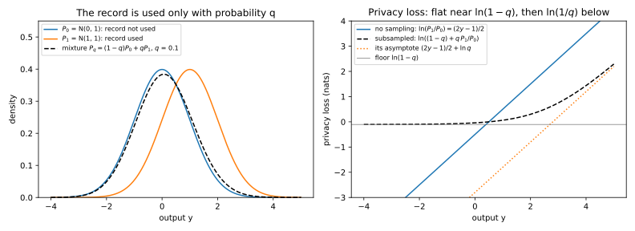

33 Amplification by subsampling
How much cheaper does a private training step become when it looks only at a small random batch, and for which ways of drawing the batch does the answer hold? Training a neural network with differential privacy (DP) runs stochastic gradient descent (SGD) for ten thousand steps or more, with per-example clipping and Gaussian noise, a method called DP-SGD. Each step clips every example’s gradient to norm \(C\), sums the clipped gradients and adds Gaussian noise whose standard deviation is the noise multiplier \(\sigma\) times \(C\). If every record were in every batch, ten thousand steps with \(\sigma = 1\) would cost \(\varepsilon = 5425.5\) at \(\delta = 10^{-5}\) (Rényi DP), a guarantee nobody would report.
The answer comes from one idea: the output becomes a mixture. Neighbours differ by one added or removed record, unless a section says otherwise. Write \(P_0\) for a step’s output distribution without the record and \(P_1\) for it with the record. If the batch contains the record only with probability \(q\), the sampling rate, the step on the dataset with the record draws from \(P_1\) with probability \(q\) and from \(P_0\) otherwise. So, once the rest of the batch is fixed, every likelihood ratio between the two runs moves toward 1, because it becomes a weighted average of 1 and the old ratio: \[\frac{(1 - q)P_0 + qP_1}{P_0} = (1 - q) + q\,\frac{P_1}{P_0}. \tag{33.1}\]
The running example is DP-SGD with \(q = 0.01\), \(\sigma = 1\), \(\delta = 10^{-5}\) and up to \(T = 10{,}000\) steps. Sampling turns a step that costs \(\varepsilon = 1\) into one that costs 0.0170, and with Rényi differential privacy (RDP) the whole run costs \(\varepsilon = 6.71\) instead of 5425.5.
33.1 Amplification for (ε, δ)-DP under Poisson sampling
You have a mechanism \(M\) that is \((\varepsilon, \delta)\)-DP for add/remove neighbours, and you run it on a random sample of the data. What are the privacy parameters of the combined mechanism? Every later answer reuses this argument: fix everything except whether the record was drawn, compare a mixture with its parts, and average the rest back in. The tight answer below is due to Li, Qardaji & Su (2012) and Balle, Barthe & Gaboardi (2018).
Definition 33.1 (Poisson subsampling) Let \(q \in [0, 1]\). Poisson sampling with rate \(q\) keeps each record of a dataset \(D\) independently with probability \(q\) and returns the kept records, \(S_q(D)\). For a mechanism \(M\), the subsampled mechanism \(M \circ S_q\) runs \(M\) on \(S_q(D)\).
The argument rests on one inequality about mixtures. Write \(P(A)\) for the probability that \(P\) gives to an event \(A\), and say that \(P\) is \((\varepsilon, \delta)\)-close to \(Q\) when \(P(A) \le e^\varepsilon Q(A) + \delta\) for every event \(A\). Take two runs that both draw from a common distribution \(R\) with probability \(1 - q\), while with probability \(q\) the first draws from \(P\) and the second from \(P'\). In the opening’s picture, \(R\) and \(P'\) are both \(P_0\) and \(P\) is \(P_1\). Where the runs agree the likelihood ratio is 1, and where they differ it is at most \(e^\varepsilon\), up to the slack \(\delta\). So the mixture’s ratio should be at most the weighted average \(1 + q(e^\varepsilon - 1)\), and the slack should shrink to \(q\delta\). But \(P\) must be close to \(R\) as well as to \(P'\), or a likely event of \(P\) could be one that \(R\) never gives.
Lemma 33.1 (The mixture lemma) Let \(R\), \(P\) and \(P'\) be distributions on the same outputs, and let \(\varepsilon \ge 0\), \(\delta \in [0, 1]\) and \(q \in [0, 1]\). Suppose that for every event \(A\), \[P(A) \le e^\varepsilon P'(A) + \delta \qquad\text{and}\qquad P(A) \le e^\varepsilon R(A) + \delta. \tag{33.2}\] Then for every event \(A\), \[(1 - q)R(A) + qP(A) \le e^{\varepsilon'}\big[(1 - q)R(A) + qP'(A)\big] + q\delta, \qquad e^{\varepsilon'} = 1 + q(e^\varepsilon - 1). \tag{33.3}\]
Proof. The plan is to treat the three probabilities of \(A\) as unknowns. Smaller values of \(P'(A)\) and \(R(A)\) make the inequality harder to satisfy, so it is enough to check it at the smallest values that the assumptions allow. Fix \(A\) and write \(a = P(A)\), \(b = P'(A)\) and \(c = R(A)\). Write \(F\) for the gap, the left side of Equation 33.3 minus the bracketed term times \(e^{\varepsilon'}\). The claim is that \(F\) is at most \(q\delta\).
- Expand \(F\). The two terms in \(c\) combine to \((1 - q)c(1 - e^{\varepsilon'})\), and \(1 - e^{\varepsilon'} = -q(e^\varepsilon - 1)\) by the definition of \(\varepsilon'\). The term in \(b\) is \(-e^{\varepsilon'}qb\). So \[F = qa - q(1 - q)(e^\varepsilon - 1)\,c - q\big(1 + q(e^\varepsilon - 1)\big)\,b. \tag{33.4}\]
- Find the worst \(b\) and \(c\). Both coefficients are negative, so \(F\) is largest when \(b\) and \(c\) are as small as allowed. Each assumption, solved for \(b\) or \(c\), gives the lower bound \(e^{-\varepsilon}(a - \delta)\), and both are also at least 0, because they are probabilities.
- Case \(a \le \delta\). Without the two negative terms, \(F \le qa \le q\delta\).
- Case \(a > \delta\). Put \(b = c = e^{-\varepsilon}(a - \delta)\) into step 1. With the common factor \(q\) taken out, the two coefficients add up to \((1 - q)(e^\varepsilon - 1) + 1 + q(e^\varepsilon - 1) = e^\varepsilon\), so \[F \le qa - q\,e^{-\varepsilon}(a - \delta)\,e^\varepsilon = q\delta. \tag{33.5}\]
Balle, Barthe & Gaboardi (2018, Theorem 2) call this advanced joint convexity, and the chapter’s script finds random triples that meet it with equality (Table 33.8). In the theorem, \(R\), \(P\) and \(P'\) will be outputs for one fixed choice of the other records, and the next lemma averages that choice back in.
Lemma 33.2 (Averaging over a shared choice) Let \(P = \sum_tw_tP_t\) and \(Q = \sum_tw_tQ_t\) be averages of distributions with the same non-negative weights \(w_t\) summing to 1, and let \(\gamma > 0\). If \(P_t(A) \le \gamma Q_t(A) + \delta\) for every \(t\) and every event \(A\), then \[P(A) \le \gamma Q(A) + \delta \quad\text{for every event } A. \tag{33.6}\]
Proof.
- Write the excess as an average. For a fixed event \(A\), both averages use the same weights, so the excess of the averages is the average of the excesses: \[P(A) - \gamma Q(A) = \sum_tw_t\big[P_t(A) - \gamma Q_t(A)\big]. \tag{33.7}\]
- Bound the average. Each bracket is at most \(\delta\), and so is any weighted average of them.
This is joint convexity of the hockey-stick divergence of Definition 3.4, the largest excess \(P(A) - \gamma Q(A)\) over events, for a mixing choice that both runs share. The two lemmas give the theorem, which says that \(\delta\) is paid only when the record is drawn.
Theorem 33.1 (Amplification by Poisson subsampling) Let \(M\) be \((\varepsilon, \delta)\)-DP for add/remove neighbours, and let \(q \in [0, 1]\). Then \(M \circ S_q\) is \((\varepsilon', \delta')\)-DP for add/remove neighbours with \[\varepsilon' = \ln\big(1 + q(e^\varepsilon - 1)\big), \qquad \delta' = q\delta. \tag{33.8}\] For every \(\varepsilon\) and \(q\), some \(\varepsilon\)-DP mechanism attains this \(\varepsilon'\).
Proof. The plan is to fix every random choice except whether the added record \(x\) is drawn, apply Lemma 33.1 once for each order of the pair, average with Lemma 33.2, and finally exhibit a mechanism that attains the bound. Let \(D' = D \cup \{x\}\).
- Condition on the rest of the sample. Let \(\tilde D\) be the Poisson sample of \(D\). Each record has its own coin, so the sample of \(D'\) is \(\tilde D \cup \{x\}\) with probability \(q\) and \(\tilde D\) otherwise, independently of \(\tilde D\). Given \(\tilde D\), write \(P_0 = M(\tilde D)\) and \(P_1 = M(\tilde D \cup \{x\})\), so that the output on \(D'\) is the mixture \((1 - q)P_0 + qP_1\).
- Bound the direction with the mixture first. Apply Lemma 33.1 with \(R = P' = P_0\) and \(P = P_1\). Both of its assumptions hold because \(\tilde D\) and \(\tilde D \cup \{x\}\) are neighbours, and its right side becomes \(e^{\varepsilon'}P_0(A) + q\delta\). Here the dataset with the record comes first and its neighbour removes it, which Numerical accounting calls the remove direction.
- Bound the direction with the mixture second. Apply the lemma with \(R = P = P_0\) and \(P' = P_1\). Its first assumption is DP of \(M\) again, and its second, \(P_0(A) \le e^\varepsilon P_0(A) + \delta\), always holds. Its left side becomes \(P_0(A)\), so \(P_0(A) \le e^{\varepsilon'}[(1 - q)P_0(A) + qP_1(A)] + q\delta\).
- Average over \(\tilde D\). Both bounds hold for every \(\tilde D\), so Lemma 33.2 carries them to the subsampled mechanism.
- Attain the bound. Randomized response reports a bit truthfully with probability \(e^\varepsilon/(1 + e^\varepsilon)\) and flipped otherwise (Theorem 18.1). Let \(M\) apply it to the bit “the sample contains a flagged record”, take \(D\) with no flagged record, and let \(x\) be flagged. Then \(P_1\) gives the output 1 exactly \(e^\varepsilon\) times as often as \(P_0\), for every \(\tilde D\). So at the output 1 the likelihood ratio of the mixture to \(P_0\) is \[\frac{(1 - q)P_0(1) + qP_1(1)}{P_0(1)} = 1 + q(e^\varepsilon - 1). \tag{33.9}\] With \(\delta = 0\), the event that the output is 1 forces \(e^{\varepsilon'}\) to be at least this ratio.
The formula has two regimes (Figure 33.1). For small \(\varepsilon\), \(e^\varepsilon - 1 \approx \varepsilon\) and the logarithm is close to its argument minus 1, so \(\varepsilon' \approx q\varepsilon\). For large \(\varepsilon\) the 1 inside the logarithm stops mattering, so \(\varepsilon' \approx \varepsilon - \ln(1/q)\), because in the worst case the record was drawn. At \(q = 0.01\) the switch comes near \(\varepsilon = \ln(1/q) = 4.6\), so Table 33.1 gives 0.9059 at \(\varepsilon = 5\), not the 0.05 of a factor of 100. The \(\delta\) always shrinks by the factor \(q\), because the failure event of \(M\) only matters when the record was drawn. The bound is tight for one step, but the composition of per-step pairs is not, as Section 33.5 shows.

| \(q\) | \(\varepsilon = 0.1\) | \(\varepsilon = 1\) | \(\varepsilon = 5\) | \(\varepsilon = 10\) |
|---|---|---|---|---|
| 0.01 | 0.0011 | 0.0170 | 0.9059 | 5.3993 |
| 0.1 | 0.0105 | 0.1586 | 2.7563 | 7.6978 |
| 0.5 | 0.0512 | 0.6201 | 4.3136 | 9.3069 |
Example 33.1 Take the randomized response of step 5 of the proof of Theorem 33.1, with \(\varepsilon = 1\) and \(q = 0.1\). When the record is not drawn the true bit is 0, which is reported as 0 with probability \(e/(1 + e) = 0.7311\) and as 1 with probability 0.2689. When it is drawn the two probabilities swap. The mixture weights the two cases by 0.9 and 0.1, so it reports 1 with probability \(0.9 \times 0.2689 + 0.1 \times 0.7311 = 0.3152\) and 0 with probability 0.6848.
Without sampling the likelihood ratios are \(e\) and \(1/e\). With sampling the largest ratio of the mixture to \(P_0\) is \(0.3152/0.2689 = 1.1718 = 1 + 0.1(e - 1)\), so \(\varepsilon' = \ln 1.1718 = 0.1586\), as Equation 33.8 says, against \(q\varepsilon = 0.1\). The largest ratio the other way, \(0.7311/0.6848 = 1.0675\), is smaller, and it can never exceed \(1/0.9\), because the mixture puts at least 0.9 times \(P_0\)’s probability on every output.
33.2 Sampling schemes and neighbouring relations
Poisson sampling gives batches of random size, but most training code draws batches of a fixed size. Does Theorem 33.1 still apply to them? You need the right pair of outputs for each scheme, because an accountant for one scheme can be off by several times when the code runs another. A fixed batch size pairs naturally with replace-one neighbours, datasets of the same size that differ in one record’s value, because an added record would change the size.
Definition 33.2 (Fixed-size batches) Sampling without replacement draws a batch of \(m\) of the \(n\) records of a dataset uniformly at random. Shuffle and partition puts the records in a uniformly random order once per epoch and uses consecutive blocks of \(m\) records as the epoch’s batches.
A uniformly random batch contains a given record with probability \(m/n\), which plays the role of \(q\). But there is no independent coin for the differing record, so the proof uses a coupling: it builds the batch in a way that has such a coin, and shares the coin and the other records between the two datasets (Balle, Barthe & Gaboardi 2018, Theorem 9).
Theorem 33.2 (Amplification by sampling without replacement) Let \(M\) be \((\varepsilon, \delta)\)-DP for replace-one neighbours on datasets of size \(m\), and let \(q = m/n\). Running \(M\) on a batch of \(m\) records drawn without replacement from \(n\) is \((\varepsilon', \delta')\)-DP for replace-one neighbours on datasets of size \(n\), with \[\varepsilon' = \ln\big(1 + q(e^\varepsilon - 1)\big), \qquad \delta' = q\delta. \tag{33.10}\]
Proof. The plan is to draw the batch in two stages that expose a coin for the differing record, write both outputs as the mixtures of Lemma 33.1, check its assumptions, and average. Let \(D\) and \(D'\) differ in record \(i\), which is \(x\) in \(D\) and \(x'\) in \(D'\).
- Build a batch that avoids \(i\). Draw \(B\), a uniform set of \(m - 1\) of the other \(n - 1\) records, then \(z\), a uniform record among the \(n - m\) others not in \(B\). Each set of \(m\) records that avoids \(i\) arises from \(m\) choices of \(z\), equally often, so \(B \cup \{z\}\) is a uniform such set.
- Write both outputs as mixtures. A uniform batch contains \(i\) with probability \(q\). Given that it does, the rest of it has the law of \(B\), and otherwise the batch has the law of \(B \cup \{z\}\). So flip a coin with probability \(q\), and use \(B \cup \{x\}\) in \(D\) and \(B \cup \{x'\}\) in \(D'\) on heads, and \(B \cup \{z\}\) in both on tails. Given \((B, z)\), the outputs are \((1 - q)R + qP\) and \((1 - q)R + qP'\), with \(R = M(B\cup\{z\})\), \(P = M(B\cup\{x\})\) and \(P' = M(B\cup\{x'\})\).
- Check the assumptions. The three batches have size \(m\) and differ pairwise in one element, so each of \(P\) and \(P'\) is \((\varepsilon, \delta)\)-close to the other two.
- Apply the lemma and average. Lemma 33.1 gives the bound in each direction, and Lemma 33.2 averages over \((B, z)\).
Each combination of sampling scheme and neighbouring relation needs its own base guarantee (Table 33.2), and the zero-out relation of its last row sets the target’s gradient to 0. The last column applies them to DP-SGD’s sum of gradients clipped to norm \(C\), with noise \(\sigma C\). A replaced record moves the sum by up to \(2C\), twice what an added one does, since the new gradient may point the opposite way. A Gaussian mechanism’s privacy depends only on the shift in units of the noise, so this is the same as a shift of \(C\) with noise multiplier \(\sigma/2\). Lebeda, Regehr, Kamath & Steinke (2024, Proposition 9) show that for fixed-size batches this shift is the worst case under add and under remove too.
| Sampling | Neighbours | Pair to account for | Base guarantee needed | Gaussian sum, clipping norm \(C\) |
|---|---|---|---|---|
| Poisson, rate \(q\) | add/remove | \((1 - q)P_0 + qP_1\) against \(P_0\) | add/remove | means differ by \(C\): noise multiplier \(\sigma\) |
| Fixed size \(m\) of \(n\) | replace-one | \((1 - q)R + qP\) against \((1 - q)R + qP'\), \(q = m/n\) | replace-one | means differ by \(2C\): noise multiplier \(\sigma/2\) |
| Fixed size \(m\) of \(n\) | add/remove | dominated by the Poisson pair at \(\sigma/2\) | replace-one | \(\sigma/2\) |
| Poisson, rate \(q\) | replace-one | both sides mixtures | \((2\varepsilon, (1 + e^\varepsilon)\delta)\) by group privacy | means differ by up to \(2C\) |
| Shuffle and partition | zero-out | one batch per epoch | no simple formula (Proposition 33.1) | measured, not derived |
Poisson sampling under replace-one neighbours is the row where both outputs are mixtures, \((1 - q)R + qP\) and \((1 - q)R + qP'\), given the rest of the sample \(\tilde D\). Here \(R = M(\tilde D)\), and \(P\) and \(P'\) add \(x\) or \(x'\), so each is one step from \(R\) but two from the other. Lemma 33.1 needs one guarantee for all these pairs, so it must use the weaker one. Group privacy (Theorem 19.2) gives \((2\varepsilon, (1 + e^\varepsilon)\delta)\) for datasets two steps apart, and the lemma with Lemma 33.2 then gives \[\varepsilon' = \ln\big(1 + q(e^{2\varepsilon} - 1)\big), \qquad \delta' = q(1 + e^\varepsilon)\delta. \tag{33.11}\] For small \(q\) this is about \(e^\varepsilon + 1\) times the add/remove value, since \(e^{2\varepsilon} - 1 = (e^\varepsilon - 1)(e^\varepsilon + 1)\). It is loose, because it charges the pairs one step apart the two-step price. For pure DP you can do better at each output. The ratio \([(1 - q)R + qP]/[(1 - q)R + qP']\) grows with \(P\) and falls with \(P'\), and pure DP allows at most \(P = e^\varepsilon R\) and at least \(P' = e^{-\varepsilon}R\). With these values the ratio is \((1 - q + qe^\varepsilon)/(1 - q + qe^{-\varepsilon})\), whose logarithm is \[\varepsilon' = \ln\big(1 + q(e^\varepsilon - 1)\big) - \ln\big(1 - q(1 - e^{-\varepsilon})\big). \tag{33.12}\] The Laplace mechanism on a sum attains it, because by Theorem 1.5 an output far enough to the right has \(P/R = e^\varepsilon\) when \(x\) adds \(+1\) and \(P'/R = e^{-\varepsilon}\) when \(x'\) adds \(-1\). For small \(\varepsilon\) the exact value is about twice the add/remove value. At \(\varepsilon = 1\) and \(q = 0.01\) it is 0.02338, against 0.06193 for the group-privacy bound and 0.01704 for add/remove, a ratio of 1.37, not 3.64.
Shuffle and partition is worse, because in one epoch the record is in exactly one batch, so no step’s output is a mixture with “not used”. The only uncertainty is which batch held the record, and the other records can give that away. Chua et al. (2024) build a bad case under zero-out, with scalar gradients: every other record has gradient \(-1\) and the target has \(+1\). If you add the batch size to each batch sum, the other records cancel. Then batches without the target output \(\mathcal N(0, \sigma^2)\), while the target’s batch outputs \(\mathcal N(2, \sigma^2)\), or \(\mathcal N(1, \sigma^2)\) when the target is zeroed out. A natural test says “target present” when the largest batch output exceeds a threshold \(\tau\).
Proposition 33.1 (A lower bound for shuffle and partition) In the epoch above, with \(b\) batches and noise multiplier \(\sigma\), let \(\Phi\) be the standard normal distribution function. For every threshold \(\tau\) and every \(\varepsilon\), the smallest \(\delta(\varepsilon)\) for which the epoch is \((\varepsilon, \delta(\varepsilon))\)-DP satisfies \[\delta(\varepsilon) \ge \Big[1 - \Phi\Big(\frac{\tau-2}\sigma\Big)\Phi\Big(\frac\tau\sigma\Big)^{b-1}\Big] - e^\varepsilon\Big[1 - \Phi\Big(\frac{\tau-1}\sigma\Big)\Phi\Big(\frac\tau\sigma\Big)^{b-1}\Big]. \tag{33.13}\]
Proof.
- Compute the event’s probability. The largest output stays below \(\tau\) only if every batch output does, and the batches’ noises are independent. With the target present, its batch stays below \(\tau\) with probability \(\Phi(\frac{\tau-2}\sigma)\), and each of the \(b - 1\) others with probability \(\Phi(\frac\tau\sigma)\). With the target zeroed out, the first factor becomes \(\Phi(\frac{\tau-1}\sigma)\).
- Remove the batch index. Neither product depends on which batch holds the target, so the average over the random order changes nothing.
- Bound \(\delta(\varepsilon)\). The smallest \(\delta(\varepsilon)\) is the largest value of \(P(A) - e^\varepsilon Q(A)\) over events \(A\), the hockey-stick divergence of Definition 3.4. One particular event gives a value no larger.
The best \(\tau\) gives the best such bound, and so a lower bound on \(\varepsilon\) at a given \(\delta\). Under zero-out a Poisson step’s sum also moves by at most \(C\), so the Poisson accountant applies to the same relation, and the script reproduces Chua et al.’s check (Table 33.8).
Example 33.2 In the running example one epoch is \(b = 100\) batches, and Table 33.3 compares three batch samplers over it. Deterministic batches use the record once, in a known batch, so the epoch is a plain Gaussian mechanism with an exact \(\varepsilon\). Shuffling gets the lower bound of Proposition 33.1, and Poisson sampling the RDP upper bound.
| \(\sigma\) | Deterministic batches (exact) | Shuffled batches (lower bound) | Poisson sampling (upper bound) |
|---|---|---|---|
| 0.5 | 10.00 | 10.00 | 8.03 |
| 1 | 4.38 | 4.06 | 1.21 |
| 1.5 | 2.75 | 1.46 | 0.47 |
| 2 | 1.99 | 0.48 | 0.26 |
| 2.5 | 1.55 | 0.20 | 0.17 |
| 3 | 1.27 | 0.10 | 0.14 |
At \(\sigma = 1\), shuffled training has \(\varepsilon \ge 4.06\) after one epoch, close to the 4.38 of a fixed order, while the Poisson accountant reports at most 1.21. The gap closes as \(\sigma\) grows (Figure 33.2), and at \(\sigma = 3\) this test is too weak to show one. Over 10,000 steps, fixed-size batches give \(\varepsilon = 47.42\) by RDP, with noise multiplier \(\sigma/2 = 0.5\), against 6.71 for Poisson sampling.

33.3 RDP of the Poisson-subsampled Gaussian
Per-step \((\varepsilon, \delta)\) amplification composes badly, as Section 33.5 will show, while RDP composes well. A mechanism is \((\alpha, \varepsilon(\alpha))\)-RDP when the Rényi divergence of order \(\alpha > 1\) between its outputs on any two neighbouring datasets is at most \(\varepsilon(\alpha)\), and these curves add under composition (Rényi DP). So DP-SGD’s accountant needs the curve of one subsampled Gaussian step, the Rényi divergence between a Gaussian mixture and a Gaussian, which is an exact finite sum at integer orders. Figure 33.3 shows the pair and its privacy loss, the logarithm of the likelihood ratio at each output.

The Rényi divergence of Definition 3.2 is a log-average of a power of the likelihood ratio, in which a larger order gives large ratios more weight. For \(\alpha > 1\), \[D_\alpha(P\|Q) = \frac{1}{\alpha - 1}\ln\mathbb E_{y\sim Q}\Big[\Big(\frac{P(y)}{Q(y)}\Big)^\alpha\Big]. \tag{33.14}\] The proof below starts, like that of Theorem 33.1, by fixing the rest of the sample, so its first step needs the Rényi counterpart of Lemma 33.2.
Lemma 33.3 (Averaging cannot increase a Rényi divergence) Let \(P = \sum_tw_tP_t\) and \(Q = \sum_tw_tQ_t\) be averages with the same weights \(w_t\), and let \(\alpha > 1\). Then \[D_\alpha(P\|Q) \le \max_tD_\alpha(P_t\|Q_t). \tag{33.15}\]
Proof.
- Write the divergence as an integral. By the definition, \(e^{(\alpha-1)D_\alpha(P\|Q)}\) is the integral of \(Q\,g(P/Q)\) with the convex function \(g(r) = r^\alpha\).
- Use joint convexity. A function of the form \(Q\,g(P/Q)\) with \(g\) convex, called the perspective of \(g\), is jointly convex in the pair \((P, Q)\), as Section F.5 in the appendices derives. So the integral at the averaged pair is at most the average of the integrals: \[\int Q\,g(P/Q)\,\mathrm d y \le \sum_tw_t\int Q_t\,g(P_t/Q_t)\,\mathrm d y. \tag{33.16}\]
- Take the largest term. An average is at most its largest term, and the logarithm and division by \(\alpha - 1 > 0\) keep the order.
This is the quasi-convexity of the Rényi divergence (van Erven & Harremoës 2014, Theorem 13). The theorem below and its proof are due to Mironov, Talwar & Zhang (2019).
Theorem 33.3 (RDP of the subsampled Gaussian) Let \(P_0 = \mathcal N(0, \sigma^2)\), \(P_1 = \mathcal N(1, \sigma^2)\) and \(P_q = (1 - q)P_0 + qP_1\). The Poisson-subsampled Gaussian mechanism with \(\ell_2\) sensitivity 1 and noise multiplier \(\sigma\) is \((\alpha, \varepsilon(\alpha))\)-RDP for add/remove neighbours, for every \(\alpha > 1\), with \[\varepsilon(\alpha) = \max\big\{D_\alpha(P_q\|P_0),\ D_\alpha(P_0\|P_q)\big\} = D_\alpha(P_q\|P_0) = \frac{\ln A_\alpha}{\alpha - 1}, \tag{33.17}\] where \[A_\alpha = \mathbb E_{y\sim P_0}\Big[\Big((1 - q) + q\frac{P_1(y)}{P_0(y)}\Big)^\alpha\Big], \qquad \frac{P_1(y)}{P_0(y)} = e^{(2y - 1)/(2\sigma^2)}. \tag{33.18}\] For integer \(\alpha\), \[A_\alpha = \sum_{j=0}^\alpha\binom\alpha j(1 - q)^{\alpha - j}q^j\exp\Big(\frac{j^2 - j}{2\sigma^2}\Big). \tag{33.19}\]
Proof. The plan is to remove every coordinate except the one along which the record moves the output, compare the two directions of the remaining pair, and evaluate the larger one.
- Condition on the rest of the sample. Let \(f\) be the clipped gradient sum divided by \(C\), so that its sensitivity is 1, and let \(\tilde D\) be the rest of the sample. Given \(\tilde D\), one output is \(\mathcal N(f(\tilde D), \sigma^2I)\) and the other mixes it, with weight \(1 - q\), with \(\mathcal N(f(\tilde D\cup\{x\}), \sigma^2I)\). By Lemma 33.3 it suffices to bound one \(\tilde D\).
- Reduce to one dimension. A shift or rotation of both distributions changes no likelihood ratio, so rotate the difference of the means onto the first axis. The other coordinates are identical in both runs and independent of the first, and Rényi divergences of independent coordinates add (Theorem 3.2), so they contribute 0.
- Reduce to length 1. A rescaling of the output by \(1/c\) turns a difference of length \(c < 1\) into one of length 1 with noise \(\sigma/c > \sigma\). That is the length-1 pair with extra independent noise added, which cannot increase a divergence (Theorem 3.5). What is left is the pair \((P_q, P_0)\) in both orders.
- Compare the two directions. Mironov, Talwar & Zhang (2019, Theorem 5) prove that the order with the mixture first is the larger, for every \(\alpha \ge 1\), using the reflection \(y \mapsto 1 - y\), which swaps \(P_0\) and \(P_1\). This step is cited, and Section L.1 in the appendices derives it.
- Write the first direction as an expectation. The definition with \(Q = P_0\) makes \((\alpha - 1)D_\alpha(P_q\|P_0)\) the logarithm of the average of \((P_q/P_0)^\alpha\) under \(P_0\). The mixture divided by \(P_0\) is \((1 - q) + q\,P_1/P_0\), which is Equation 33.18, and the Gaussian ratio \(P_1/P_0 = e^{(2y-1)/(2\sigma^2)}\) is the normal case of Theorem 1.5 with shift 1.
- Expand for integer \(\alpha\). Write \(r\) for the ratio \(P_1/P_0\). The binomial theorem expands \((1 - q + qr)^\alpha\) into the sum of \(\binom\alpha j(1 - q)^{\alpha-j}q^jr^j\) over \(j\), and the average of a sum is the sum of the averages.
- Compute each moment. By the definition of \(D_j\), the average of \(r^j\) under \(P_0\) is \(e^{(j-1)D_j(P_1\|P_0)}\). Two normals one unit apart have \(D_j(P_1\|P_0) = j/(2\sigma^2)\), by Equation 3.19. So the \(j\)-th moment is \(e^{(j^2 - j)/(2\sigma^2)}\), which gives Equation 33.19.
For fractional \(\alpha\) the sum does not terminate, so the script integrates Equation 33.18 numerically, and the reverse direction too. The dominance of step 4 holds for Rényi divergences only, and for \(\delta(\varepsilon)\) Numerical accounting computes both directions.
The curve has two regimes (Figure 33.4). Low orders average the privacy loss over the bulk of the outputs, where sampling flattens it, so the curve stays close to the \(j = 2\) term of Equation 33.19, the lowest power of \(q\) that costs anything. High orders look at the far tail, where sampling saves only \(\ln(1/q)\). To make this precise, note that every term of Equation 33.19 is positive, so \(A_\alpha\) is at least its last term, and its logarithm gives \[\varepsilon(\alpha) \ge \frac{\alpha\ln q}{\alpha - 1} + \frac{\alpha}{2\sigma^2}, \tag{33.20}\] the unsubsampled curve minus about \(\ln(1/q)\), a bound Concentrated DP also uses.

Example 33.3 Take \(q = 0.01\) and \(\sigma = 1\). At \(\alpha = 2\), Equation 33.19 has three terms, one for each number \(j\) of factors \(r\). Their coefficients are \((0.99)^2 = 0.9801\), \(2 \times 0.99 \times 0.01 = 0.0198\) and \((0.01)^2 = 0.0001\), which add up to \((1 - q + q)^2 = 1\). The exponential factors are 1, 1 and \(e\), so they change only the last term, which becomes 0.000272. So \(A_2 = 1 + 0.0001 \times 1.71828 = 1.00017183\) and \(\varepsilon(2) = \ln A_2 = 1.7181 \times 10^{-4}\), against 1 without sampling. The terms \(j = 0\) and 1 cost nothing, because they have the factor 1 that a mixture of identical distributions would have.
The binomial sum is exact but exists only at integer orders, while the integral covers every order but could be wrong if its grid were too coarse. Table 33.4 compares them, with the reverse direction \(D_\alpha(P_0\|P_q)\) beside them.
| \(\alpha\) | Binomial sum | Integral | Reverse direction |
|---|---|---|---|
| 2 | \(1.718134 \times 10^{-4}\) | \(1.718134 \times 10^{-4}\) | \(1.6022 \times 10^{-4}\) |
| 8 | — | \(8.9364 \times 10^{-4}\) | \(5.7239 \times 10^{-4}\) |
| 10 | \(3.827042 \times 10^{-2}\) | \(3.827042 \times 10^{-2}\) | — |
| 32 | \(1.124628 \times 10^{1}\) | \(1.124628 \times 10^{1}\) | \(1.6923 \times 10^{-3}\) |
The two computations agree to all printed digits. The curve stays near the \(j = 2\) term up to \(\varepsilon(8) = 8.9364 \times 10^{-4}\), against 4 without sampling, then climbs to \(\varepsilon(16) = 3.0879\) and \(\varepsilon(32) = 11.246\), against 8 and 16. The reverse direction is smaller at every order, because it looks at the left tail, where \(P_0/P_q\) is at most \(1/(1 - q)\).
33.4 Small q and the moments accountant
Abadi et al. (2016) introduced DP-SGD together with the moments accountant, which tracks the cumulant generating function \(K_M(\lambda) = \ln\mathbb E[e^{\lambda L}]\) of the privacy loss \(L\). Rényi DP shows that this is the RDP curve in another form, \(K_M(\lambda) = \lambda\,\varepsilon(\lambda + 1)\). Abadi et al. bounded \(K_M\) for small \(q\), so you need the leading term and to know where it stops holding. The idea is that of Example 33.3: the terms \(j = 0\) and 1 cost nothing, and every term from \(j = 3\) on carries \(q^3\) or a higher power.
Proposition 33.2 (The subsampled Gaussian for small q) For \(q \to 0\) at fixed \(\alpha\) and \(\sigma\), the RDP curve of Theorem 33.3 is \[\varepsilon(\alpha) = \frac{\alpha q^2\big(e^{1/\sigma^2} - 1\big)}{2} + O(q^3) \approx \frac{\alpha q^2}{2\sigma^2}\quad\text{for large }\sigma. \tag{33.21}\]
Proof. The plan is to subtract the part of the sum that costs nothing, keep the lowest power of \(q\), and expand the logarithm.
- Subtract what costs nothing. Without the exponential factors, Equation 33.19 is \((1 - q + q)^\alpha = 1\). After you subtract this 1, each term is multiplied by its factor minus 1, and the terms \(j = 0\) and 1 are zero because their factor is \(e^0 = 1\): \[A_\alpha = 1 + \sum_{j=2}^\alpha\binom\alpha j(1 - q)^{\alpha - j}q^j\big(e^{(j^2 - j)/(2\sigma^2)} - 1\big). \tag{33.22}\]
- Keep the lowest power of \(q\). The \(j = 2\) term is \(\binom\alpha2q^2(1 - q)^{\alpha-2}(e^{1/\sigma^2} - 1)\), and every other term carries \(q^3\) or more.
- Take the logarithm. For small \(y\), \(\ln(1 + y) = y + O(y^2)\), and \((1 - q)^{\alpha - 2} = 1 + O(q)\), so \[\ln A_\alpha = \frac{\alpha(\alpha-1)}{2}q^2\big(e^{1/\sigma^2} - 1\big) + O(q^3). \tag{33.23}\]
- Divide by \(\alpha - 1\). This gives Equation 33.21 by Equation 33.17. For large \(\sigma\), \(e^{1/\sigma^2} - 1 \approx 1/\sigma^2\).
The cost per step is quadratic in \(q\), not linear as in Theorem 33.1, so the total over \(E\) epochs of \(E/q\) steps is about \(E\,q\,\alpha/(2\sigma^2)\), which shrinks as batches get smaller. Abadi et al. (2016, Lemma 3) prove a bound of the same shape for \(\sigma \ge 1\), \(q < 1/(16\sigma)\) and integer \(\lambda \le \sigma^2\ln\frac{1}{q\sigma}\). Its leading term, divided by \(\lambda\), with \(\alpha = \lambda + 1\), reads \[\varepsilon(\alpha) \lesssim \frac{q^2\alpha}{(1 - q)\sigma^2}\quad\text{for }\ \alpha \le 1 + \sigma^2\ln\frac{1}{q\sigma}. \tag{33.24}\] For large \(\sigma\) this is about twice Equation 33.21, a valid but loose bound, and the source of the “\(\varepsilon(\alpha) \approx q^2\alpha/\sigma^2\)” you will see quoted.
The real limit of the expansion is its range of orders. Each next term multiplies the power of \(q\) by \(q\) and the exponential by \(e^{j/\sigma^2}\), so the terms first fall and later grow. The expansion fails when the last term, \(q^\alpha e^{\alpha(\alpha-1)/(2\sigma^2)}\), overtakes the \(j = 2\) term, about \(q^2e^{1/\sigma^2}\). If you ignore the binomial coefficients, the difference of their logarithms factors as \((\alpha - 2)\big(\frac{\alpha + 1}{2\sigma^2} - \ln\frac1q\big)\), which turns positive at \(\alpha = 2\sigma^2\ln(1/q) - 1\). So the expansion holds up to about \[\alpha \approx 2\sigma^2\ln(1/q), \tag{33.25}\] and the curve leaves the quadratic regime abruptly there. Abadi et al.’s range has the same form with about half the constant, so it is conservative.
Example 33.4 At \(q = 0.01\), \(\ln(1/q) = 4.605\), so Equation 33.25 puts the breakdown at 9.2 for \(\sigma = 1\) and 147.4 for \(\sigma = 4\). Table 33.5 compares the exact curve with Equation 33.21 and Equation 33.24. For instance, at \(\alpha = 2\) and \(\sigma = 1\) the Abadi column is \(0.0002/0.99 = 2.0202 \times 10^{-4}\).
| \(\alpha\) | Exact | Leading term | Abadi | Exact / leading | Exact / leading, \(\sigma = 4\) |
|---|---|---|---|---|---|
| 2 | \(1.7181 \times 10^{-4}\) | \(1.7183 \times 10^{-4}\) | \(2.0202 \times 10^{-4}\) | 1.00 | 1.00 |
| 4 | \(3.6315 \times 10^{-4}\) | \(3.4366 \times 10^{-4}\) | \(4.0404 \times 10^{-4}\) | 1.06 | 1.00 |
| 6 | \(5.8350 \times 10^{-4}\) | \(5.1548 \times 10^{-4}\) | \(6.0606 \times 10^{-4}\) | 1.13 | 1.00 |
| 8 | \(8.9364 \times 10^{-4}\) | \(6.8731 \times 10^{-4}\) | \(8.0808 \times 10^{-4}\) | 1.30 | 1.00 |
| 10 | \(3.8270 \times 10^{-2}\) | \(8.5914 \times 10^{-4}\) | \(1.0101 \times 10^{-3}\) | 44.54 | 1.01 |
| 32 | \(1.1246 \times 10^{1}\) | \(2.7493 \times 10^{-3}\) | \(3.2323 \times 10^{-3}\) | 4090.67 | 1.02 |
At \(\sigma = 1\) the exact curve first exceeds twice the leading term at \(\alpha = 8.9\), just below 9.2, and at \(\sigma = 4\) at 147.4. Up to \(\alpha = \sigma^2\ln(1/q)\) the leading term is within 8%. Beyond the breakdown it is 2246 times too small at \(\alpha = 16\) for \(\sigma = 1\), so an accountant that used it there would under-report \(\varepsilon\). Abadi et al.’s range ends at \(\alpha = 5.6\) for \(\sigma = 1\), and at \(\alpha = 8\) their value is already too small. Their headline \(\varepsilon \approx 1.26\), for \(\sigma = 4\) and 10,000 steps, matches the exact curve converted as in Section 33.5: 1.2586, or 1.0355 with the improved conversion.
33.5 Accounting for DP-SGD
How large is the running example’s \(\varepsilon\), and how much does the accounting route matter? The RDP accountant adds the per-step curve over the \(T\) steps and converts the total to \((\varepsilon, \delta)\) once. Mironov’s conversion adds \(\ln(1/\delta)/(\alpha - 1)\) to the RDP value, and the improved conversion of From RDP to (ε, δ) subtracts two small corrections. Section C.4 and Section C.5 in the appendices derive the result from scratch.
Theorem 33.4 (The RDP accountant for DP-SGD) Let DP-SGD run \(T\) steps that may each depend on the earlier outputs. Each step draws a Poisson sample with rate \(q\), clips every per-example gradient to norm \(C\) and adds \(\mathcal N(0, \sigma^2C^2I)\) to the sum. With \(\varepsilon(\alpha)\) from Equation 33.17, DP-SGD is \((\varepsilon, \delta)\)-DP for add/remove neighbours with \[\varepsilon = \min_{\alpha}\Big[T\,\varepsilon(\alpha) + \frac{\ln(1/\delta)}{\alpha - 1}\Big] \quad\text{(Mironov)}, \qquad \varepsilon = \min_\alpha\Big[T\,\varepsilon(\alpha) + \ln\frac{\alpha - 1}{\alpha} - \frac{\ln\delta + \ln\alpha}{\alpha - 1}\Big] \quad\text{(improved)}, \tag{33.26}\] with the minimum over the grid of orders shared by this part.
Proof.
- Identify one step. The noisy sum divided by \(C\) is the mechanism of Theorem 33.3, whose curve is \(\varepsilon(\alpha)\).
- Compose. RDP curves add under adaptive composition (Theorem 29.2), so the \(T\) steps have the curve \(T\,\varepsilon(\alpha)\).
- Convert. Mironov’s conversion is Theorem 29.5 and the improved one is Theorem 30.1 (Balle et al. 2020, Theorem 21). Each holds at every order, so the smallest value over the grid holds too.
The naive routes amplify each step in \((\varepsilon, \delta)\) form and then compose. Each step gets a share \(\delta_0\) of \(\delta\), and is \((\varepsilon_0, \delta_0)\)-DP for the \(\varepsilon_0\) that solves the exact Gaussian profile of Theorem 20.3. Then Equation 33.8 turns this into \((\varepsilon_1, q\delta_0)\). Basic composition (Theorem 19.3) adds the parameters to \((T\varepsilon_1, Tq\delta_0)\), which fixes \(\delta_0 = \delta/(Tq)\). Advanced composition (Corollary 21.1) grows like \(\sqrt T\) at the price of an extra slack \(\delta'\), whose share of \(\delta\) the script optimizes.
For one step RDP loses, 0.96 against 0.20, because the conversion costs \(\ln(1/\delta)/(\alpha - 1)\) however small the curve is. But RDP pays that cost once, so it wins from \(T = 4\) on (Figure 33.5). The best order falls from 9.9 to 4.1 as \(T\) grows, because the growing term \(T\,\varepsilon(\alpha)\) pulls the minimum toward the low orders. The improved conversion saves from 27.5% at \(T = 1\) to 9.6% at \(T = 10{,}000\), where it gives 6.71 against 7.43, still an upper bound. Numerical accounting computes the tight value, and Choosing an accountant compares all the accountants of this part.
Example 33.5 Table 33.6 and Figure 33.5 give \(\varepsilon\) for the running example under the four routes.
| Steps \(T\) | RDP, Mironov | RDP, improved | Best order (improved) | Per step, basic | Per step, advanced |
|---|---|---|---|---|---|
| 1 | 1.32 | 0.96 | 9.9 | 0.20 | 1.13 |
| 10 | 1.41 | 1.04 | 9.4 | 3.64 | 7.88 |
| 100 | 1.61 | 1.21 | 8.8 | 58.01 | 78.10 |
| 1,000 | 2.54 | 2.10 | 7.8 | 839.39 | 1258.64 |
| 10,000 | 7.43 | 6.71 | 4.1 | 11296.93 | 24379.55 |
The per-step route at \(T = 10{,}000\) shows where it loses. With basic composition it must spend \(\delta_0 = 10^{-5}/100 = 10^{-7}\) per step, which forces \(\varepsilon_0 = 5.35\). That is in the regime where amplification only subtracts (Figure 33.1), so the amplified \(\varepsilon_1 = 1.130\) is only about five times smaller, and basic composition then multiplies it by 10,000. Advanced composition is worse at every \(T\) here, because the second term of its bound (Theorem 21.1), \(T\varepsilon_1(e^{\varepsilon_1} - 1)\), alone exceeds \(T\varepsilon_1\) once \(\varepsilon_1 > \ln 2\).

33.6 Amplification for a general mechanism
For \((\varepsilon, \delta)\)-DP, Equation 33.8 is one formula, tight over the whole class of \((\varepsilon, \delta)\)-DP mechanisms. Is there an RDP analogue, a tight map from any mechanism’s RDP curve and \(q\) to the subsampled curve? No, and the reason is also why accountants treat the Gaussian as a special case. But the expansion of Theorem 33.3 still works for one direction of any mechanism.
Proposition 33.3 (The first direction for any mechanism) Let \(M\) be \((\alpha, \varepsilon(\alpha))\)-RDP for add/remove neighbours at every order, let \(P_0\) and \(P_1\) be its outputs on a neighbouring pair, and let \(\alpha \ge 2\) be an integer. Then \[D_\alpha\big((1 - q)P_0 + qP_1\big\|P_0\big) \le \frac{1}{\alpha - 1}\ln\Big[(1 - q)^{\alpha-1}(\alpha q - q + 1) + \sum_{j=2}^\alpha\binom\alpha j(1 - q)^{\alpha-j}q^je^{(j-1)\varepsilon(j)}\Big]. \tag{33.27}\]
Proof.
- Expand. Steps 5 and 6 of the proof of Theorem 33.3 never used the Gaussian, so they expand the divergence into the moments of \(r = P_1/P_0\) under \(P_0\).
- Bound each moment. By the definition of \(D_j\), the \(j\)-th moment is \(e^{(j-1)D_j(P_1\|P_0)}\), which RDP of \(M\) bounds by \(e^{(j-1)\varepsilon(j)}\) for \(j \ge 2\).
- Collect the first two terms. The moments for \(j = 0\) and 1 are 1, and their terms add to \((1 - q)^\alpha + \alpha q(1 - q)^{\alpha - 1} = (1 - q)^{\alpha - 1}(\alpha q - q + 1)\).
This is not a tight general answer, for two reasons. Each \(\varepsilon(j)\) is a maximum over pairs, taken separately for each \(j\), so the bound is attained only if one pair is the worst at every order at once, as for the Gaussian. And the other direction has no finite expansion and can be the larger one.
Theorem 33.5 (General RDP amplification (Zhu & Wang 2019)) Let \(M\) be \((\alpha, \varepsilon(\alpha))\)-RDP for add/remove neighbours at every order, and let \(q\) be the Poisson rate. For every integer \(\alpha \ge 2\), \(M \circ S_q\) is RDP at order \(\alpha\) with at most \[\frac{1}{\alpha - 1}\ln\Big[(1 - q)^{\alpha-1}(\alpha q - q + 1) + \binom\alpha2q^2(1 - q)^{\alpha-2}e^{\varepsilon(2)} + 3\sum_{j=3}^\alpha\binom\alpha j(1 - q)^{\alpha-j}q^je^{(j-1)\varepsilon(j)}\Big]. \tag{33.28}\]
The proof is Zhu & Wang’s (2019, Theorem 5). It bounds the first direction as Proposition 33.3 does and covers the second with the factor 3. Without that factor the expression is a lower bound for some mechanisms (their Theorem 6), and exact for the Gaussian and Laplace mechanisms (their Theorem 8 and Proposition 10). Wang, Balle & Kasiviswanathan (2019) give a bound of the same form for fixed-size batches.
Example 33.6 Table 33.7 evaluates Equation 33.28 on the running example’s step, with the Gaussian’s curve \(\varepsilon(j) = j/(2\sigma^2)\), against the exact curve of Equation 33.17.
| \(\alpha\) | 2 | 4 | 8 | 16 | 32 |
|---|---|---|---|---|---|
| General bound Equation 33.28 | \(1.7181 \times 10^{-4}\) | \(4.1880 \times 10^{-4}\) | \(1.4036 \times 10^{-3}\) | 3.1611 | 11.282 |
| Exact Equation 33.17 | \(1.7181 \times 10^{-4}\) | \(3.6315 \times 10^{-4}\) | \(8.9364 \times 10^{-4}\) | 3.0879 | 11.246 |
| Ratio | 1.00 | 1.15 | 1.57 | 1.02 | 1.00 |
The factor 3 costs nothing at \(\alpha = 2\), where there are no terms with \(j \ge 3\), and adds only about \(\ln 3/(\alpha - 1)\) at high orders, where the last term dominates. It costs most in between, a factor 1.57 at \(\alpha = 8\), near DP-SGD’s best orders for 100 to 1000 steps (Table 33.6). So accountants use Equation 33.19 for the Gaussian.
33.7 Code
The script code/subsampling.py computes every number in this chapter and draws every figure. It computes the subsampled Gaussian’s RDP both by the binomial sum and by integration, and reproduces checks from Chua et al. (2024) and Lebeda et al. (2024). From the repository root:
uv run python code/part04-privacy-accounting/subsampling.py| Experiment | Result |
|---|---|
| Mixture lemma, 20,000 random triples | Largest ratio of the left side’s excess to \(q\delta\): 1.0000 |
| Replace-one under Poisson, \(\varepsilon = 1\), \(q = 0.01\) | Group-privacy bound 0.06193 (ratio 3.64 to add/remove’s 0.01704); exact pure-DP value 0.02338 (ratio 1.37) |
| One epoch, 100 batches, \(\sigma = 1\) | Poisson \(\le 1.21\); shuffled \(\ge 4.06\); deterministic 4.38 |
| Chua et al. check, \(\sigma = 0.4\), 10,000 batches | Shuffled \(\delta(4) \ge 0.226\); deterministic 0.244 |
| Lebeda et al.’s setting, \(q = 0.001\), \(\sigma = 0.8\), 10,000 steps | RDP: Poisson 1.38, fixed-size 15.30 |
| Subsampled Gaussian RDP, \(q = 0.01\), \(\sigma = 1\) | Sum and integral agree to seven digits (Table 33.4) |
| Small-\(q\) breakdown, \(q = 0.01\) | Exact reaches twice the leading term at \(\alpha = 8.9\) (\(\sigma = 1\)) and 147.4 (\(\sigma = 4\)) |
| Abadi et al. example, \(\sigma = 4\) | Mironov 1.2586 at \(\alpha = 20\); improved 1.0355 at \(\alpha = 17\) |
| Running example, \(T = 10{,}000\) | RDP improved 6.71 at \(\alpha = 4.1\); Mironov 7.43; fixed-size batches 47.42; RDP beats per-step basic composition from \(T = 4\) |
tests/test_subsampling.py checks that the output still matches.
33.8 Summary
| Result | Statement | Use |
|---|---|---|
| Lemma 33.1 | A shared part of weight \(1 - q\) turns \((\varepsilon, \delta)\) into \((\varepsilon', q\delta)\) | Every amplification result |
| Lemma 33.2 | A bound for each shared choice holds for the average | Fixing the rest of the sample |
| Theorem 33.1 | Poisson, add/remove: \(\varepsilon' = \ln(1 + q(e^\varepsilon - 1))\), \(\delta' = q\delta\), tight per step | A small \(\varepsilon\) is multiplied by \(q\), a large one loses at most \(\ln(1/q)\); replace-one costs about twice as much for small \(\varepsilon\) (Equation 33.12) |
| Theorem 33.2 | Fixed size \(m\) of \(n\), replace-one: the same with \(q = m/n\) | Fixed-size batches: account at \(\sigma/2\) |
| Proposition 33.1 | A largest-batch-output test bounds \(\delta(\varepsilon)\) from below | No amplification theorem for shuffling; account for the sampler you run |
| Lemma 33.3 | The same for \(D_\alpha\) | Reducing a step to one pair |
| Theorem 33.3 | \(\varepsilon(\alpha) = \ln A_\alpha/(\alpha - 1)\), a binomial sum at integer orders; exact | The RDP accountant for DP-SGD |
| Proposition 33.2 | \(\varepsilon(\alpha) \approx \alpha q^2(e^{1/\sigma^2} - 1)/2\) | Quick estimates up to \(\alpha \approx 2\sigma^2\ln(1/q)\), where it breaks abruptly |
| Theorem 33.4 | Compose \(T\,\varepsilon(\alpha)\), convert once at the best order | Never compose per-step \((\varepsilon, \delta)\); 6.71 on the running example |
| Proposition 33.3 | Any mechanism’s first direction, by moments | Exact when one pair is worst at every order |
| Theorem 33.5 | Any mechanism, Poisson: a factor 3 on the terms \(j \ge 3\) | Other mechanisms; up to 1.57 times exact here |
33.9 References
- Li, Qardaji & Su, “On Sampling, Anonymization, and Differential Privacy: Or, k-Anonymization Meets Differential Privacy” (ACM Symposium on Information, Computer and Communications Security, ASIACCS 2012). The first proof of the tight \((\varepsilon, \delta)\) amplification for Poisson sampling.
- Balle, Barthe & Gaboardi, “Privacy Amplification by Subsampling: Tight Analyses via Couplings and Divergences” (NeurIPS 2018). Advanced joint convexity (Theorem 2), the tight \((\varepsilon, \delta)\) amplification for Poisson sampling (Theorem 8), fixed-size sampling with replace-one neighbours (Theorem 9) and sampling with replacement, and tightness via randomized response (Theorem 13). The reference for Section 33.1 and Section 33.2.
- Abadi, Chu, Goodfellow, McMahan, Mironov, Talwar & Zhang, “Deep Learning with Differential Privacy” (CCS 2016). DP-SGD and the moments accountant; Lemma 3 is the small-\(q\) bound of Section 33.4.
- van Erven & Harremoës, “Rényi Divergence and Kullback-Leibler Divergence” (IEEE Transactions on Information Theory, 2014). The properties of the Rényi divergence, including joint quasi-convexity (Theorem 13), used in Lemma 33.3.
- Mironov, Talwar & Zhang, “Rényi Differential Privacy of the Sampled Gaussian Mechanism” (arXiv 2019). The reduction to one dimension (Theorem 4), the dominance of the first direction (Theorem 5 and Corollary 7), and the numerically stable computation of \(A_\alpha\) (Section 3.3). The reference for Section 33.3.
- Wang, Balle & Kasiviswanathan, “Subsampled Rényi Differential Privacy and Analytical Moments Accountant” (AISTATS 2019). General RDP amplification for sampling without replacement (Theorem 9) and a lower bound (Proposition 11).
- Zhu & Wang, “Poisson Subsampled Rényi Differential Privacy” (ICML 2019). General RDP amplification for Poisson sampling (Theorem 5), the matching lower bound (Theorem 6), and exactness under a condition that the Gaussian and Laplace mechanisms satisfy (Theorem 8 and Proposition 10).
- Chua, Ghazi, Kamath, Kumar, Manurangsi, Sinha & Zhang, “How Private are DP-SGD Implementations?” (ICML 2024). Shows that shuffle-and-partition batching can be much less private than the Poisson accountant reports, with the largest-batch-output test of Proposition 33.1.
- Lebeda, Regehr, Kamath & Steinke, “Avoiding Pitfalls for Privacy Accounting of Subsampled Mechanisms under Composition” (arXiv:2405.20769, 2024; IEEE SaTML 2025). Fixed-size against Poisson sampling (the factor two in the shift, and \(\varepsilon \approx 1\) against \(\varepsilon > 10\)), and worst-case datasets that fail under composition.
- Zhu, Dong & Wang, “Optimal Accounting of Differential Privacy via Characteristic Function” (AISTATS 2022). Dominating pairs for subsampled mechanisms (Theorem 11), used by Lebeda et al. and by Numerical accounting.
- Balle, Barthe, Gaboardi, Hsu & Sato, “Hypothesis Testing Interpretations and Rényi Differential Privacy” (AISTATS 2020). The improved conversion used in Equation 33.26 (Theorem 21).